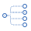

Toolbar
The toolbar contains actions for performing common actions within the kactus2.
The toolbar adapts to the size of the window. If the window gets too small for the
toolbar, two buttons for scrolling left and right will be made visible.
Scrolling can also be done by using the mouse wheel.
The toolbar hides actions that are not available in the current environment. For example,
generators are not show when no component or design has been selected.
The toolbar groups
The File group contains functions for controlling the files of the component.
-
New. Creates a new component, design, system,
bus, COM definition or API definition.
-
Save. Saves the active document with its
current name and location. Activates when a document has been edited.
-
Save As. Saves the document with a new name
and location.
-
Save all. Saves all open documents.
-
Save Hierarchy. Saves the open document
and the underlying hierarchy with new names.
-
Print. Prints the currently open design.
The Library group contains functions for maintaining the IP-XACT libraries used by the Kactus2.
-
Configure libraries. Select the
libraries used in Kactus2. The libraries can be set as default and active.
-

Refresh libraries. Refresh the currently
active libraries.
-
Check integrity. Check the file integrity
of the libraries.
The Generation group consists of component related generators. Shows the common generators in
Kactus2, and any available generator plugins. The common generators are:
-

Document generator. Generates documentation
of the active component in HTML-format. If the active document is a design, all component instances
are included as well.
-
Import File to Component. Imports elements from a
source file e.g. VHDL or verilog to the active component.
-

VHDL generator. Generates top-level VHDL entity
template for the current component. If the active document is a design, the generator creates a
structural architecture from the component instances and interconnections.
-

Modelsim generator. Generates a modelsim
script for compiling all the VHDL files required for simulating the active component.
The Diagram Tools group consist of tools related to the design editors of Kactus2. This group is only
visible to the HW, SW and system design editors.
-

Add Column. Creates a new column to the design. In HW design, the type of the possible
items in the new column can be customized.
-
Select Tool. Allows the selection of items within the HW design. Information regarding the
selected item is show on the different editors of the des.
-

Interconnection Tool. Allows the creation of interconnections between the interfaces of
component instances. After selecting the starting point, the possible ending points for the
connection are highlighted in the design. An interconnection cannot be dragged from the starting
point to the ending point. Both points must be selected separately.
-
Interface Tool. Draft interfaces can be to the component containing the currently opening
design. These interfaces must be placed within columns allowing interface items.
-
Drafting Tool. Allows the creation of draft component instances and interfaces. The drafted
component instances must be placed in columns allowing component instances. Interfaces can be
placed either into the component containing the design, or any of the drafted component instances.
-

Toggle Off-Page Tool. Changes the selected connections from regular to off-page, and from
off-page to regular. Off-page connections are displayed as squares near an interface, and the
connected point is displayed when an off-page point is selected.
-
Sticky Note Tool. Create notes regarding the currently open design. Notes can be associated
with an item contained within the design. This can be achieved through the button located at the
top right corner of the note.
The View group has actions for defining the view of the current design. Visible Windows -button
is always available.
-

Zoom In. Enlarge the display of the active
design.
-
Zoom Out. Reduce the display of the active
design.
-

Original 1:1 Zoom.Return the display
to original size.
-
Fit Document to View. Fit the currently
active document to the available view.
-

Visible Windows. Allows changing the
visibilities of the available windows.
-
Visibilities.Change the visibilities of
design items.
The Workspace group shows the currently selected workspace.
-

Workspace. Select, delete or create other
workspaces. Only non-active, non-default workspaces can be deleted.
The Protection group shows the current documents editability. The lock status can be changed with
this button.
-
Locked. While locked, no changes can be
made to the document.
-

Unlocked. While unlocked, the documents
can be edited and saved.
The System group contains actions related to the whole system.
-
Settings. Displays the available settings
for Kactus2.
-
Help. Opens the Kactus2 manual.
-
About. Shows information about Kactus2.
-
Exit. Exit Kactus2.